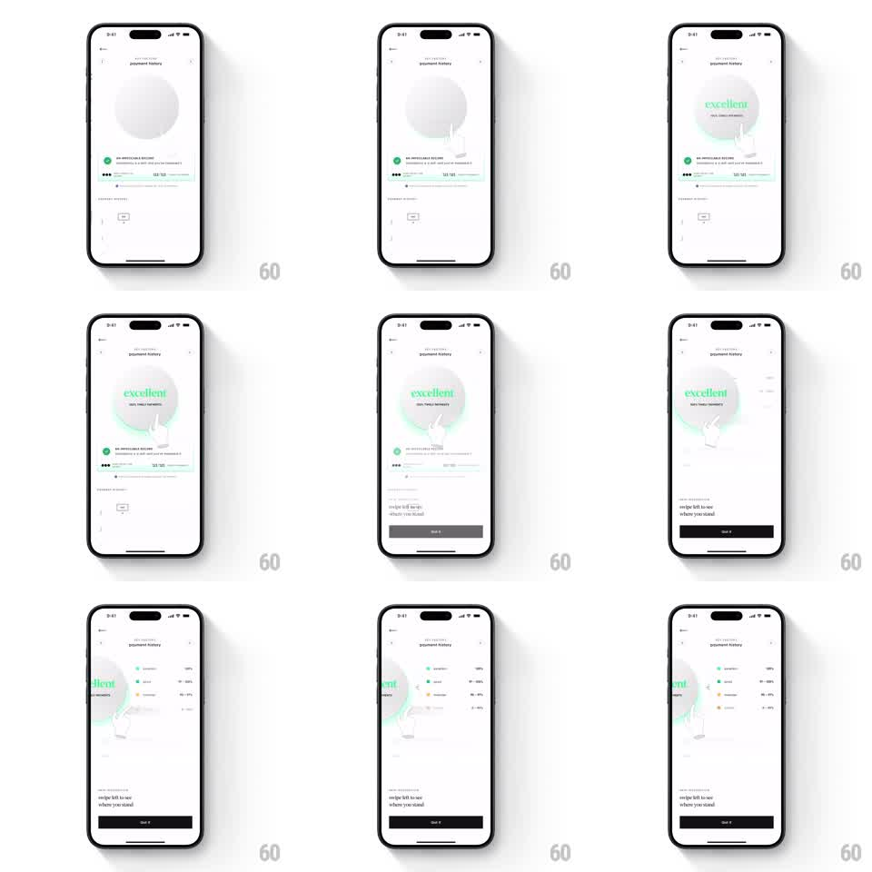

Media
Frame-by-frame

Rebuild this animation 1:1: CRED's credit-score tooltip - on the light score screen, a circular dial reveals "excellent" in green inside it, while a hand-cursor tooltip demonstrates swiping left; following the swipe slides the score panel left to reveal a detailed breakdown with colored rating segments and a "swipe left to see where you stand" hint above a dark CTA.

Rebuild this animation 1:1: CRED's credit-score tooltip - on the light score screen, a circular dial reveals "excellent" in green inside it, while a hand-cursor tooltip demonstrates swiping left; following the swipe slides the score panel left to reveal a detailed breakdown with colored rating segments and a "swipe left to see where you stand" hint above a dark CTA.
## Integration
Integration: stack-agnostic spec - springs given as stiffness/damping, timed motions as duration + curve; map every value to your framework and animation library of choice.
## Scene
Light gray CRED screen ("payment history" header). Center: a large circular score dial that fills in with green text "excellent" and "100% timely payments". Below: an "AN UNMISTAKABLE RECORD" line, masked card number, and a paginated detail area. A hand cursor floats over the dial. Hint text: "swipe left to see where you stand" above a dark "Get it" style button.
## Motion spec
Pattern: onboarding hand-tooltip with swipe-reveal.
- The dial draws in (stroke sweep 800ms) as "excellent" fades up in green with a soft glow.
- The hand tooltip appears over the dial (scale 0.8 -> 1, 200ms) and drags left in a loop: swipe arc 60pt left (500ms ease-in-out), hold 300ms, fade reset (200ms), repeat.
- On the user's actual swipe (or after the demo), the score panel translates left with the finger 1:1 and the breakdown panel enters from the right: rows of rating segments in green/amber/red with percentage labels.
- Release snaps the page (spring ~320/22); the dial page slides fully off and the breakdown fills the viewport.
- The hint text fades out once the breakdown is visible.
## Calibration
- The hand loop is slow and legible - it teaches, it does not rush.
- The swipe is a pager, not a dismiss: both pages remain one gesture apart.
## Reduced motion
The hand tooltip is static, pointing left; page change crossfades (200ms).
## Don't miss
- The green "excellent" glow is the only saturated element on the first page.
- The breakdown keeps the same dial edge visible as a sliver, preserving orientation.